Sonnet 新正代
Anthropic · Claude · 2026-06 · 主干正代
Claude Sonnet 5
把新一代高阶 agent 能力下放到 Sonnet 的成本与延迟层。


长时程 agents
官方回溯 3.5 / 3.6 / 3.7 谱系
编辑判断
Sonnet 5 证明 Claude 主线是能力下放 + 可靠执行，而不是只刷新顶配。
证据边界
博客与 System Card 足够做行为和风险分析；训练 recipe 未公开。
把新一代高阶 agent 能力下放到 Sonnet 的成本与延迟层。

Sonnet 新正代
长时程 agents
官方回溯 3.5 / 3.6 / 3.7 谱系
Sonnet 5 证明 Claude 主线是能力下放 + 可靠执行，而不是只刷新顶配。
博客与 System Card 足够做行为和风险分析；训练 recipe 未公开。